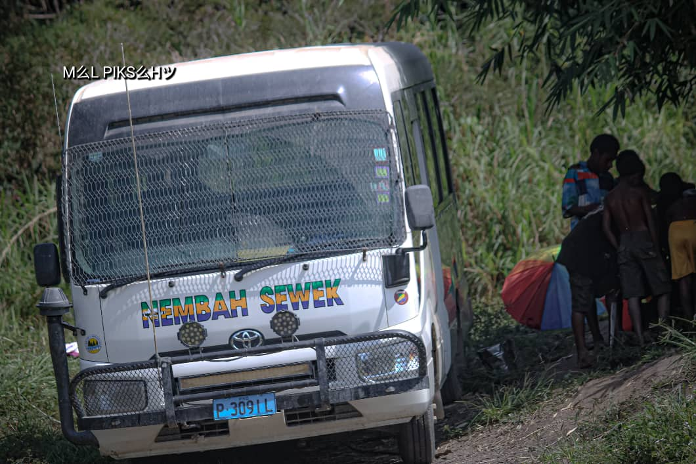

Passenger Transportation
The PMV provides transportation for passengers travelling along the designated service route.
PMV Transportation Services
Explore photographs of the Nembrah Sewek PMV associated with MJM Enterprise Limited's transportation service.

The Nembah Sewek PMV is presented as part of MJM Enterprise Limited's transportation service and its connection with passengers travelling along the Lae-Gabensis route.
The PMV provides transportation for passengers travelling along the designated service route.
PMV transportation helps connect passengers travelling between communities along the Lae-Gabensis route.